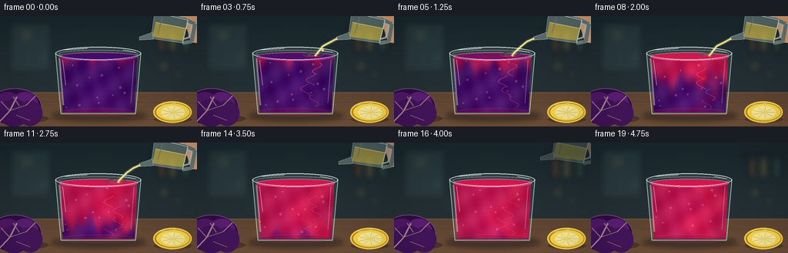
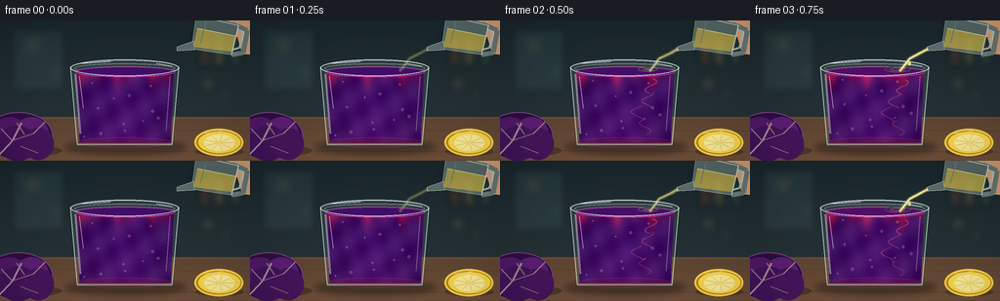

CODING AGENTS AS PIXEL WORLD MODELS
traex/GPT-5.6-Sol · phygen_149
点击播放 · 原生 RGB 像素
逐轮保存的候选
回放视频、检查图与代码变化。
每份候选均可单独播放。实际图片检查记录在下方工具轨迹中。
候选 01播放与检查图
点击播放 · 原生 RGB 像素


展开代码变化
--- 上一保存版本
+++ 本次保存版本
@@ -0,0 +1,228 @@
+from pathlib import Path
+import math
+import numpy as np
+from PIL import Image, ImageDraw, ImageFilter
+import artifact_io
+
+W, H, N = 256, 144, 20
+S = 3
+WW, HH = W*S, H*S
+rng = np.random.default_rng(149)
+
+def B(b): return tuple(int(round(v*S)) for v in b)
+def P(points): return [(int(round(x*S)), int(round(y*S))) for x,y in points]
+def smoothstep(x):
+ x = np.clip(x, 0, 1)
+ return x*x*(3-2*x)
+
+def ellipse(draw, box, **kw): draw.ellipse(B(box), **kw)
+def line(draw, pts, width=1, fill=None, **kw):
+ if fill is not None: kw['fill']=fill
+ draw.line(P(pts), width=max(1,int(width*S)), **kw)
+def polygon(draw, pts, **kw): draw.polygon(P(pts), **kw)
+
+# Stable, softly detailed kitchen background
+base = Image.new('RGB', (WW,HH), (24,34,39))
+d = ImageDraw.Draw(base)
+# wall gradient
+for y in range(H):
+ t=y/H
+ col=(int(25+19*t), int(39+16*t), int(44+15*t)) if y<99 else (83,61,47)
+ d.line([(0,y*S),(WW,y*S)], fill=col, width=S)
+# blurred window / shelves
+bgfx = Image.new('RGBA',(WW,HH),(0,0,0,0)); bd=ImageDraw.Draw(bgfx)
+bd.rectangle(B((13,9,66,72)), fill=(92,133,133,35), outline=(161,197,191,32), width=2*S)
+line(bd,[(39,9),(39,72)],1,(160,199,193,28)); line(bd,[(13,40),(66,40)],1,(160,199,193,28))
+bd.rectangle(B((194,13,247,17)), fill=(8,15,18,75))
+for x,c in [(205,(160,89,53,100)),(220,(212,177,86,80)),(237,(89,128,112,90))]:
+ bd.rounded_rectangle(B((x,19,x+9,47)), radius=3*S, fill=c)
+for x,y,r,c in [(34,25,7,(238,222,157,35)),(58,53,5,(185,224,210,27)),(213,65,8,(230,180,88,30)),(231,76,5,(225,223,179,30))]:
+ ellipse(bd,(x-r,y-r,x+r,y+r),fill=c)
+bgfx=bgfx.filter(ImageFilter.GaussianBlur(4*S)); base=Image.alpha_composite(base.convert('RGBA'),bgfx)
+# tabletop
+tab=Image.new('RGBA',(WW,HH),(0,0,0,0)); td=ImageDraw.Draw(tab)
+td.rectangle(B((0,99,256,144)),fill=(83,61,47,255))
+for y in range(100,144):
+ q=(y-100)/44
+ td.line([(0,y*S),(WW,y*S)],fill=(95+int(20*q),70+int(12*q),51+int(8*q),255),width=S)
+line(td,[(0,100),(256,100)],1,(205,171,127,55))
+for y in [111,133]: line(td,[(0,y),(256,y+2)],.5,(39,28,22,35))
+base=Image.alpha_composite(base,tab)
+
+# Background ingredients: cut red cabbage and lemon, painterly but clear
+def draw_ingredients(im):
+ lay=Image.new('RGBA',(WW,HH),(0,0,0,0)); q=ImageDraw.Draw(lay)
+ # shadows
+ ellipse(q,(2,128,63,139),fill=(20,15,17,85)); ellipse(q,(200,130,249,139),fill=(28,20,12,80))
+ # cabbage half peeking in from left
+ ellipse(q,(-16,94,54,143),fill=(46,14,66,255),outline=(117,65,130,255),width=1*S)
+ # layered leaves
+ for box,col in [((-10,99,29,137),(80,25,103,255)),((14,99,50,136),(93,30,116,255)),((-2,108,38,144),(66,20,91,255)),((23,110,55,143),(70,22,93,255))]:
+ ellipse(q,box,fill=col)
+ # cabbage veins
+ line(q,[(-2,139),(13,123),(22,105)],2,(205,170,206,170))
+ line(q,[(13,124),(1,111)],1,(194,147,201,140)); line(q,[(13,123),(34,116),(46,104)],1,(210,172,211,140))
+ line(q,[(21,129),(39,136)],1,(200,155,205,125)); line(q,[(25,117),(17,105)],1,(194,153,201,125))
+ # lemon half
+ ellipse(q,(199,111,249,139),fill=(189,133,14,255),outline=(250,213,74,255),width=2*S)
+ ellipse(q,(203,114,246,136),fill=(250,218,80,255))
+ ellipse(q,(209,117,240,134),fill=(255,239,154,255))
+ cx,cy=224.5,125.5
+ for a in np.linspace(0,2*math.pi,9,endpoint=False):
+ line(q,[(cx,cy),(cx+15*math.cos(a),cy+8*math.sin(a))],.65,(222,185,55,180))
+ ellipse(q,(222.5,123.5,226.5,127.5),fill=(247,224,106,255))
+ # small highlights
+ line(q,[(208,116),(229,113)],1,(255,244,165,180))
+ return Image.alpha_composite(im,lay)
+base=draw_ingredients(base)
+
+# Precompute coordinates for liquid texture
+yy,xx=np.mgrid[0:HH,0:WW]
+xf=xx/S; yf=yy/S
+# Glass inner trapezoid with subtle elliptical top
+left = 78 + (yf-53)*0.045
+right = 178 - (yf-53)*0.045
+liqmask=((yf>=52)&(yf<=125)&(xf>=left)&(xf<=right))
+
+def draw_pitcher(im, i):
+ # pitcher remains while pouring, then retreats upward-right
+ retreat=max(0,i-13)
+ dx=retreat*3.0; dy=-retreat*2.8
+ alpha=max(0,255-retreat*42)
+ if alpha<=0:return im
+ lay=Image.new('RGBA',(WW,HH),(0,0,0,0)); q=ImageDraw.Draw(lay)
+ def pp(points): return [(x+dx,y+dy) for x,y in points]
+ # hand behind handle
+ polygon(q,pp([(236,-7),(256,-5),(256,35),(248,34),(243,17),(229,11)]),fill=(210,155,112,alpha))
+ line(q,pp([(248,6),(250,27)]),3,(239,189,146,alpha))
+ # handle
+ line(q,pp([(238,3),(253,10),(249,33),(237,35)]),5,(205,225,216,int(alpha*.42)))
+ line(q,pp([(239,6),(248,12),(245,28),(238,30)]),2,(241,250,240,int(alpha*.66)))
+ # vessel body
+ polygon(q,pp([(201,-7),(244,3),(237,35),(196,29)]),fill=(201,229,216,int(alpha*.34)),outline=(232,249,242,int(alpha*.83)))
+ # lemon juice inside pitcher
+ polygon(q,pp([(202,8),(242,16),(238,32),(198,27)]),fill=(244,219,89,int(alpha*.62)))
+ line(q,pp([(202,8),(242,16)]),1,(255,245,158,int(alpha*.85)))
+ # spout
+ polygon(q,pp([(198,21),(181,27),(181,31),(199,30)]),fill=(218,238,226,int(alpha*.35)),outline=(238,251,242,int(alpha*.86)))
+ line(q,pp([(206,-4),(244,5),(237,35)]),1,(255,255,248,int(alpha*.78)))
+ line(q,pp([(211,1),(205,23)]),1,(255,255,255,int(alpha*.38)))
+ return Image.alpha_composite(im,lay)
+
+def frame(i):
+ im=base.copy()
+ # glass cast shadow behind vessel
+ sh=Image.new('RGBA',(WW,HH),(0,0,0,0)); sd=ImageDraw.Draw(sh)
+ ellipse(sd,(66,122,191,138),fill=(15,16,18,105))
+ sh=sh.filter(ImageFilter.GaussianBlur(3*S)); im=Image.alpha_composite(im,sh)
+
+ # back wall / outline of glass
+ gl=Image.new('RGBA',(WW,HH),(0,0,0,0)); gd=ImageDraw.Draw(gl)
+ polygon(gd,[(72,47),(183,47),(176,128),(79,128)],fill=(177,219,217,22),outline=(207,237,235,130))
+ ellipse(gd,(72,40,183,57),fill=(181,223,216,24),outline=(229,247,242,170),width=1*S)
+ # back rim
+ ellipse(gd,(76,44,179,54),outline=(238,250,244,105),width=1*S)
+ im=Image.alpha_composite(im,gl)
+
+ # transformation progress, deliberately accelerated like timelapse
+ p=float(smoothstep((i-1)/17))
+ # acid front descends from surface, with folds/tendrils
+ yn=(yf-53)/72
+ xn=(xf-78)/100
+ front=1.16*p
+ waves=0.075*np.sin(xn*17 + i*.45)+0.045*np.sin(xn*35-i*.28)
+ # A concentrated curling plume follows pour point and reaches ahead of broad front
+ plume_center=.71 + .13*np.sin(yn*7.5-i*.38)
+ plume=np.exp(-((xn-plume_center)/(0.075+0.04*yn))**2) * np.clip(p*2.2-yn*.55,0,1)
+ c=1/(1+np.exp((yn-front-waves)/0.065))
+ c=np.clip(c*.90 + plume*.55,0,1)
+ # final equilibration
+ c=np.maximum(c, np.clip((p-.72)*3.2,0,1))
+ # color transitions violet -> fuchsia/acidic ruby pink
+ violet=np.array([65,13,105.],float)
+ pink=np.array([211,25,79.],float)
+ c3=c[...,None]
+ rgb=violet*(1-c3)+pink*c3
+ # glass depth, currents and luminous edges
+ depth=(1-0.18*np.abs(xn-.5))
+ swirl=7*np.sin(xf*.12+yf*.17+i*.63)+4*np.sin(xf*.27-yf*.08-i*.32)
+ rgb=rgb*depth[...,None]+swirl[...,None]
+ # richer lower central transmitted glow
+ glow=np.exp(-((xn-.48)/.36)**2)*np.clip(yn,0,1)
+ rgb += glow[...,None]*np.array([14,4,12])
+ arr=np.zeros((HH,WW,4),dtype=np.uint8)
+ arr[...,:3]=np.clip(rgb,0,255).astype(np.uint8)
+ arr[...,3]=(liqmask*246).astype(np.uint8)
+ liquid=Image.fromarray(arr,'RGBA')
+ im=Image.alpha_composite(im,liquid)
+ ld=Image.new('RGBA',(WW,HH),(0,0,0,0)); q=ImageDraw.Draw(ld)
+ # top liquid meniscus follows transformed surface color
+ topc=tuple(int(v) for v in (violet*(1-min(1,p*2.8))+pink*min(1,p*2.8)))+(245,)
+ ellipse(q,(77,47,179,58),fill=topc,outline=(240,160 if p>.1 else 100,205,150),width=1*S)
+ # central pour impact ripple rings
+ if 2<=i<=13:
+ phase=(i%4)/4
+ for k in range(2):
+ r=5+11*((phase+k*.5)%1)
+ ellipse(q,(151-r,50-r*.23,151+r,50+r*.23),outline=(255,191,186,max(15,int(100-r*5))),width=1*S)
+ # visible mixing curls / wisps
+ if 2<=i<=16:
+ for k in range(4):
+ y0=57+k*14+min(i,10)*1.2
+ x0=148+8*math.sin(k*1.8+i*.47)
+ col=(252,96,134,max(20,110-k*14)) if p<.65 else (246,111,142,55)
+ pts=[]
+ for z in range(18):
+ pts.append((x0+6*math.sin(z*.34+k+i*.15), y0+z*.9))
+ line(q,pts,1.0,col)
+ # bubbles, rise between frames
+ for k in range(12):
+ bx=86+(k*37%82)+4*math.sin(k*2.2+i*.31)
+ by=119-((k*13+i*(1.15+k%3*.24))%62)
+ if 53<by<123:
+ rr=.7+(k%3)*.35
+ ellipse(q,(bx-rr,by-rr,bx+rr,by+rr),fill=(255,190,213,50),outline=(255,239,244,105))
+ # liquid bottom refraction
+ ellipse(q,(79,120,176,130),fill=(143,17,80,70),outline=(250,144,178,65))
+ im=Image.alpha_composite(im,ld)
+
+ # pouring stream, pale lemon at top and pink at contact
+ if 1<=i<=13:
+ st=Image.new('RGBA',(WW,HH),(0,0,0,0)); q=ImageDraw.Draw(st)
+ strength=min(1,(i)/3)*min(1,(14-i)/3)
+ wob=math.sin(i*.9)*1.2
+ pts=[(182,29),(174+wob,33),(164-wob,39),(156+wob*.4,48),(153,52)]
+ # glow under stream
+ line(q,pts,5.2,(251,232,115,int(55*strength)))
+ line(q,pts,2.6,(255,238,127,int(230*strength)))
+ line(q,[(181,29),(173+wob,33),(164-wob,39),(156,48)],.7,(255,255,221,int(245*strength)))
+ # droplets alongside the coherent stream
+ if i in (3,6,9,12):
+ ellipse(q,(161+wob,42,164+wob,46),fill=(255,236,123,210))
+ im=Image.alpha_composite(im,st)
+
+ # front glass highlights and rim
+ fg=Image.new('RGBA',(WW,HH),(0,0,0,0)); q=ImageDraw.Draw(fg)
+ line(q,[(72,48),(79,127),(176,127),(183,48)],1.2,(223,245,241,155))
+ line(q,[(77,55),(82,116)],2.2,(255,255,249,100))
+ line(q,[(81,57),(85,90)],.7,(255,255,255,155))
+ line(q,[(174,57),(170,113)],1,(233,249,245,75))
+ ellipse(q,(72,40,183,57),outline=(241,252,247,190),width=1*S)
+ # lip sparkle
+ line(q,[(83,44),(113,42)],1,(255,255,255,205)); line(q,[(160,44),(176,47)],1,(255,255,255,175))
+ im=Image.alpha_composite(im,fg)
+ # pitcher must sit in front of stream source and scene
+ im=draw_pitcher(im,i)
+
+ # Subtle time-lapse exposure/vignette, no text
+ rgb=np.asarray(im.convert('RGB')).astype(np.float32)
+ # vignette
+ Y,X=np.mgrid[0:HH,0:WW]
+ vig=1-.17*np.clip(((X-WW/2)/(WW*.72))**2+((Y-HH/2)/(HH*.85))**2,0,1)
+ rgb*=vig[...,None]
+ out=Image.fromarray(np.clip(rgb,0,255).astype(np.uint8),'RGB').resize((W,H),Image.Resampling.LANCZOS)
+ return np.asarray(out,dtype=np.uint8)
+
+frames=np.stack([frame(i) for i in range(N)])
+artifact_io.save(frames, Path(__file__).resolve().parent)
+print('saved',frames.shape,frames.dtype)
可观测工具轨迹
实际执行的命令与返回图片。
命令 1exit 0
/bin/bash -lc "cat prompt.txt && printf '\\n--- RULES ---\\n' && cat GENERATION_RULES.md && printf '\\n--- SPEC ---\\n' && cat task_spec.json"
命令 2exit 0
/bin/bash -lc "find . -maxdepth 2 -type f -printf '%p\\n' | sort && printf '\\n--- binaries ---\\n' && command -v blender || true; command -v ffmpeg || true; command -v python3 || true"
命令 3exit 0
/bin/bash -lc 'cat artifact_io.py'
命令 4exit 2
/bin/bash -lc "cat > generate.py <<'PY'
from pathlib import Path
import math
import numpy as np
from PIL import Image, ImageDraw, ImageFilter
import artifact_io
W, H, N = 256, 144, 20
S = 3
WW, HH = W*S, H*S
rng = np.random.default_rng(149)
def B(b): return tuple(int(round(v*S)) for v in b)
def P(points): return [(int(round(x*S)), int(round(y*S))) for x,y in points]
def smoothstep(x):
x = np.clip(x, 0, 1)
return x*x*(3-2*x)
def ellipse(draw, box, **kw): draw.ellipse(B(box), **kw)
def line(draw, pts, width=1, **kw): draw.line(P(pts), width=max(1,int(width*S)), **kw)
def polygon(draw, pts, **kw): draw.polygon(P(pts), **kw)
# Stable, softly detailed kitchen background
base = Image.new('RGB', (WW,HH), (24,34,39))
d = ImageDraw.Draw(base)
# wall gradient
for y in range(H):
t=y/H
col=(int(25+19*t), int(39+16*t), int(44+15*t)) if y<99 else (83,61,47)
d.line([(0,y*S),(WW,y*S)], fill=col, width=S)
# blurred window / shelves
bgfx = Image.new('RGBA',(WW,HH),(0,0,0,0)); bd=ImageDraw.Draw(bgfx)
bd.rectangle(B((13,9,66,72)), fill=(92,133,133,35), outline=(161,197,191,32), width=2*S)
line(bd,[(39,9),(39,72)],1,(160,199,193,28)); line(bd,[(13,40),(66,40)],1,(160,199,193,28))
bd.rectangle(B((194,13,247,17)), fill=(8,15,18,75))
for x,c in [(205,(160,89,53,100)),(220,(212,177,86,80)),(237,(89,128,112,90))]:
bd.rounded_rectangle(B((x,19,x+9,47)), radius=3*S, fill=c)
for x,y,r,c in [(34,25,7,(238,222,157,35)),(58,53,5,(185,224,210,27)),(213,65,8,(230,180,88,30)),(231,76,5,(225,223,179,30))]:
ellipse(bd,(x-r,y-r,x+r,y+r),fill=c)
bgfx=bgfx.filter(ImageFilter.GaussianBlur(4*S)); base=Image.alpha_composite(base.convert('RGBA'),bgfx)
# tabletop
tab=Image.new('RGBA',(WW,HH),(0,0,0,0)); td=ImageDraw.Draw(tab)
td.rectangle(B((0,99,256,144)),fill=(83,61,47,255))
for y in range(100,144):
q=(y-100)/44
td.line([(0,y*S),(WW,y*S)],fill=(95+int(20*q),70+int(12*q),51+int(8*q),255),width=S)
line(td,[(0,100),(256,100)],1,(205,171,127,55))
for y in [111,133]: line(td,[(0,y),(256,y+2)],.5,(39,28,22,35))
base=Image.alpha_composite(base,tab)
# Background ingredients: cut red cabbage and lemon, painterly but clear
def draw_ingredients(im):
lay=Image.new('RGBA',(WW,HH),(0,0,0,0)); q=ImageDraw.Draw(lay)
# shadows
ellipse(q,(2,128,63,139),fill=(20,15,17,85)); ellipse(q,(200,130,249,139),fill=(28,20,12,80))
# cabbage half peeking in from left
ellipse(q,(-16,94,54,143),fill=(46,14,66,255),outline=(117,65,130,255),width=1*S)
# layered leaves
for box,col in [((-10,99,29,137),(80,25,103,255)),((14,99,50,136),(93,30,116,255)),((-2,108,38,144),(66,20,91,255)),((23,110,55,143),(70,22,93,255))]:
ellipse(q,box,fill=col)
# cabbage veins
line(q,[(-2,139),(13,123),(22,105)],2,(205,170,206,170))
line(q,[(13,124),(1,111)],1,(194,147,201,140)); line(q,[(13,123),(34,116),(46,104)],1,(210,172,211,140))
line(q,[(21,129),(39,136)],1,(200,155,205,125)); line(q,[(25,117),(17,105)],1,(194,153,201,125))
# lemon half
ellipse(q,(199,111,249,139),fill=(189,133,14,255),outline=(250,213,74,255),width=2*S)
ellipse(q,(203,114,246,136),fill=(250,218,80,255))
ellipse(q,(209,117,240,134),fill=(255,239,154,255))
cx,cy=224.5,125.5
for a in np.linspace(0,2*math.pi,9,endpoint=False):
line(q,[(cx,cy),(cx+15*math.cos(a),cy+8*math.sin(a))],.65,(222,185,55,180))
ellipse(q,(222.5,123.5,226.5,127.5),fill=(247,224,106,255))
# small highlights
line(q,[(208,116),(229,113)],1,(255,244,165,180))
return Image.alpha_composite(im,lay)
base=draw_ingredients(base)
# Precompute coordinates for liquid texture
yy,xx=np.mgrid[0:HH,0:WW]
xf=xx/S; yf=yy/S
# Glass inner trapezoid with subtle elliptical top
left = 78 + (yf-53)*0.045
right = 178 - (yf-53)*0.045
liqmask=((yf>=52)&(yf<=125)&(xf>=left)&(xf<=right))
def draw_pitcher(im, i):
# pitcher remains while pouring, then retreats upward-right
retreat=max(0,i-13)
dx=retreat*3.0; dy=-retreat*2.8
alpha=max(0,255-retreat*42)
if alpha<=0:return im
lay=Image.new('RGBA',(WW,HH),(0,0,0,0)); q=ImageDraw.Draw(lay)
def pp(points): return [(x+dx,y+dy) for x,y in points]
# hand behind handle
polygon(q,pp([(236,-7),(256,-5),(256,35),(248,34),(243,17),(229,11)]),fill=(210,155,112,alpha))
line(q,pp([(248,6),(250,27)]),3,(239,189,146,alpha))
# handle
line(q,pp([(238,3),(253,10),(249,33),(237,35)]),5,(205,225,216,int(alpha*.42)))
line(q,pp([(239,6),(248,12),(245,28),(238,30)]),2,(241,250,240,int(alpha*.66)))
# vessel body
polygon(q,pp([(201,-7),(244,3),(237,35),(196,29)]),fill=(201,229,216,int(alpha*.34)),outline=(232,249,242,int(alpha*.83)))
# lemon juice inside pitcher
polygon(q,pp([(202,8),(242,16),(238,32),(198,27)]),fill=(244,219,89,int(alpha*.62)))
line(q,pp([(202,8),(242,16)]),1,(255,245,158,int(alpha*.85)))
# spout
polygon(q,pp([(198,21),(181,27),(181,31),(199,30)]),fill=(218,238,226,int(alpha*.35)),outline=(238,251,242,int(alpha*.86)))
line(q,pp([(206,-4),(244,5),(237,35)]),1,(255,255,248,int(alpha*.78)))
line(q,pp([(211,1),(205,23)]),1,(255,255,255,int(alpha*.38)))
return Image.alpha_composite(im,lay)
def frame(i):
im=base.copy()
# glass cast shadow behind vessel
sh=Image.new('RGBA',(WW,HH),(0,0,0,0)); sd=ImageDraw.Draw(sh)
ellipse(sd,(66,122,191,138),fill=(15,16,18,105))
sh=sh.filter(ImageFilter.GaussianBlur(3*S)); im=Image.alpha_composite(im,sh)
# back wall / outline of glass
gl=Image.new('RGBA',(WW,HH),(0,0,0,0)); gd=ImageDraw.Draw(gl)
polygon(gd,[(72,47),(183,47),(176,128),(79,128)],fill=(177,219,217,22),outline=(207,237,235,130))
ellipse(gd,(72,40,183,57),fill=(181,223,216,24),outline=(229,247,242,170),width=1*S)
# back rim
ellipse(gd,(76,44,179,54),outline=(238,250,244,105),width=1*S)
im=Image.alpha_composite(im,gl)
# transformation progress, deliberately accelerated like timelapse
p=float(smoothstep((i-1)/17))
# acid front descends from surface, with folds/tendrils
yn=(yf-53)/72
xn=(xf-78)/100
front=1.16*p
waves=0.075*np.sin(xn*17 + i*.45)+0.045*np.sin(xn*35-i*.28)
# A concentrated curling plume follows pour point and reaches ahead of broad front
plume_center=.71 + .13*np.sin(yn*7.5-i*.38)
plume=np.exp(-((xn-plume_center)/(0.075+0.04*yn))**2) * np.clip(p*2.2-yn*.55,0,1)
c=1/(1+np.exp((yn-front-waves)/0.065))
c=np.clip(c*.90 + plume*.55,0,1)
# final equilibration
c=np.maximum(c, np.clip((p-.72)*3.2,0,1))
# color transitions violet -> fuchsia/acidic ruby pink
violet=np.array([65,13,105.],float)
pink=np.array([211,25,79.],float)
c3=c[...,None]
rgb=violet*(1-c3)+pink*c3
# glass depth, currents and luminous edges
depth=(1-0.18*np.abs(xn-.5))
swirl=7*np.sin(xf*.12+yf*.17+i*.63)+4*np.sin(xf*.27-yf*.08-i*.32)
rgb=rgb*depth[...,None]+swirl[...,None]
# richer lower central transmitted glow
glow=np.exp(-((xn-.48)/.36)**2)*np.clip(yn,0,1)
rgb += glow[...,None]*np.array([14,4,12])
arr=np.zeros((HH,WW,4),dtype=np.uint8)
arr[...,:3]=np.clip(rgb,0,255).astype(np.uint8)
arr[...,3]=(liqmask*246).astype(np.uint8)
liquid=Image.fromarray(arr,'RGBA')
im=Image.alpha_composite(im,liquid)
ld=Image.new('RGBA',(WW,HH),(0,0,0,0)); q=ImageDraw.Draw(ld)
# top liquid meniscus follows transformed surface color
topc=tuple(int(v) for v in (violet*(1-min(1,p*2.8))+pink*min(1,p*2.8)))+(245,)
ellipse(q,(77,47,179,58),fill=topc,outline=(240,160 if p>.1 else 100,205,150),width=1*S)
# central pour impact ripple rings
if 2<=i<=13:
phase=(i%4)/4
for k in range(2):
r=5+11*((phase+k*.5)%1)
ellipse(q,(151-r,50-r*.23,151+r,50+r*.23),outline=(255,191,186,max(15,int(100-r*5))),width=1*S)
# visible mixing curls / wisps
if 2<=i<=16:
for k in range(4):
y0=57+k*14+min(i,10)*1.2
x0=148+8*math.sin(k*1.8+i*.47)
col=(252,96,134,max(20,110-k*14)) if p<.65 else (246,111,142,55)
pts=[]
for z in range(18):
pts.append((x0+6*math.sin(z*.34+k+i*.15), y0+z*.9))
line(q,pts,1.0,col)
# bubbles, rise between frames
for k in range(12):
bx=86+(k*37%82)+4*math.sin(k*2.2+i*.31)
by=119-((k*13+i*(1.15+k%3*.24))%62)
if 53<by<123:
rr=.7+(k%3)*.35
ellipse(q,(bx-rr,by-rr,bx+rr,by+rr),fill=(255,190,213,50),outline=(255,239,244,105))
# liquid bottom refraction
ellipse(q,(79,120,176,130),fill=(143,17,80,70),outline=(250,144,178,65))
im=Image.alpha_composite(im,ld)
# pouring stream, pale lemon at top and pink at contact
if 1<=i<=13:
st=Image.new('RGBA',(WW,HH),(0,0,0,0)); q=ImageDraw.Draw(st)
strength=min(1,(i)/3)*min(1,(14-i)/3)
wob=math.sin(i*.9)*1.2
pts=[(182,29),(174+wob,33),(164-wob,39),(156+wob*.4,48),(153,52)]
# glow under stream
line(q,pts,5.2,(251,232,115,int(55*strength)))
line(q,pts,2.6,(255,238,127,int(230*strength)))
line(q,[(181,29),(173+wob,33),(164-wob,39),(156,48)],.7,(255,255,221,int(245*strength)))
# droplets alongside the coherent stream
if i in (3,6,9,12):
ellipse(q,(161+wob,42,164+wob,46),fill=(255,236,123,210))
im=Image.alpha_composite(im,st)
# front glass highlights and rim
fg=Image.new('RGBA',(WW,HH),(0,0,0,0)); q=ImageDraw.Draw(fg)
line(q,[(72,48),(79,127),(176,127),(183,48)],1.2,(223,245,241,155))
line(q,[(77,55),(82,116)],2.2,(255,255,249,100))
line(q,[(81,57),(85,90)],.7,(255,255,255,155))
line(q,[(174,57),(170,113)],1,(233,249,245,75))
ellipse(q,(72,40,183,57),outline=(241,252,247,190),width=1*S)
# lip sparkle
line(q,[(83,44),(113,42)],1,(255,255,255,205)); line(q,[(160,44),(176,47)],1,(255,255,255,175))
im=Image.alpha_composite(im,fg)
# pitcher must sit in front of stream source and scene
im=draw_pitcher(im,i)
# Subtle time-lapse exposure/vignette, no text
rgb=np.asarray(im.convert('RGB')).astype(np.float32)
# vignette
Y,X=np.mgrid[0:HH,0:WW]
vig=1-.17*np.clip(((X-WW/2)/(WW*.72))**2+((Y-HH/2)/(HH*.85))**2,0,1)
rgb*=vig[...,None]
out=Image.fromarray(np.clip(rgb,0,255).astype(np.uint8),'RGB').resize((W,H),Image.Resampling.LANCZOS)
return np.asarray(out,dtype=np.uint8)
frames=np.stack([frame(i) for i in range(N)])
artifact_io.save(frames, Path(__file__).resolve().parent)
print('saved',frames.shape,frames.dtype)
PY
python3 generate.py
ls -lh pixels.npz inspection.png index.html frames/00.png frames/19.png"命令 5exit 0
/bin/bash -lc "python3 - <<'PY' p='generate.py' s=open(p).read() s=s.replace(\"def line(draw, pts, width=1, **kw): draw.line(P(pts), width=max(1,int(width*S)), **kw)\", \"def line(draw, pts, width=1, fill=None, **kw):\\n if fill is not None: kw['fill']=fill\\n draw.line(P(pts), width=max(1,int(width*S)), **kw)\") open(p,'w').write(s) PY python3 generate.py ls -lh pixels.npz inspection.png index.html frames/00.png frames/19.png"
命令 6exit 0
/bin/bash -lc "python3 - <<'PY'
import json, numpy as np
from pathlib import Path
from PIL import Image
spec=json.loads(Path('task_spec.json').read_text())
z=np.load('pixels.npz')['pixels']
assert z.shape==(144,256,20) and z.dtype==np.uint32
fs=sorted(Path('frames').glob('*.png'))
assert len(fs)==20
for f in fs:
im=Image.open(f)
assert im.mode=='RGB' and im.size==(256,144)
# report color progression inside glass, avoiding highlights
for k in [0,4,8,12,16,19]:
a=np.asarray(Image.open(fs[k]))
roi=a[70:115,95:160]
print(k, tuple(np.median(roi.reshape(-1,3),axis=0).astype(int)), int(np.mean(np.abs(a.astype(int)-np.asarray(Image.open(fs[max(0,k-1)])).astype(int)))))
print('validated',len(fs),'RGB frames')
PY"保存候选 1 份；完成命令 6 次；可验证图片返回 0 张。原始 API 响应与完整日志保留在本地。